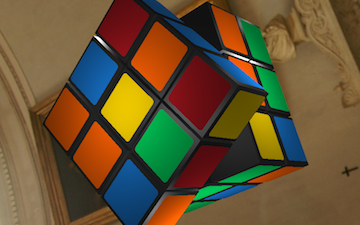

Hivemapper Flight View
Fall 2016
Flight View is a new and unique way to view data captured from drones. Scrubbing through a large library of videos just to find a single shot or angle can be tedious and prone to human error. On the other hand, point cloud reconstructions don't necessarily provide the most accurate representations of the real world. By merging both views, the ease of looking at a large area as a point cloud is combined with the ability to jump into and view any portion of the model through the video used to reconstruct it.
My main contributions were in data loading and rendering of the Flight View. I developed the backend for managing requests for multi-resolution tiles stored using S2 and updating the displayed point cloud. Rendering was done using custom-written shaders in THREE.js and WebGL.
Hivemapper Map Editor
Summer 2016
Point cloud reconstructions using structure from motion can sometimes carry artifacts such as sky points or abnormal water structures. While these abnormalities are uncommon, they do occur from time to time and can only be caught by someone reviewing the finished reconstructions. Unfortunately, having to take each processed video and open the corresponding model in an external viewer can be a tedious task that wastes a lot of unecessary time.
To solve this problem, I developed the Map Editor, a module in Hivemapper's reconstruction pipeline that sits between the last steps in video processing and the final push to production databases. As other modules finish, the Map Editor receives requests and queues the reconstructed models to be viewed. Once someone is available, they can start up an instance of the Map Editor and review all of the queued models in a custom point cloud viewer. Additionally, since someone is already reviewing a reconstructed area, building polygons for that area are overlayed on top of the point cloud for shape and height verification. The Map Editor was written in C++ and OpenGL.
CUAir Camera Gimbal
Fall 2015 - Spring 2016
As a part of the Cornell University Unmanned Air Systems (CUAir) engineering project team, I was responsible for stabilizing the camera mounted to the back of our UAV's fuselage. One of the most important tasks in the AUVSI SUAS Competition is image tagging, identification, and geolocation of various targets placed around the competition field. To guarantee the capture of clear and undistorted images, I helped design and develop a two-axis gimbal stabilization system for our onboard camera.
Outside of the mechanical design of the gimbal frame, I was responsible for the entirety of the gimbal electrical and software systems. In terms of hardware, the gimbal consisted of two brushless motors and a SimpleBGC gimbal control board mounted to a custom 3D printed frame. The control board was connected to our onboard computer via a serial interface written using PySerial. A Flask server running on the onboard computer would then processes requests from our software ground station and instruct the control board on what angles to point the camera. This onboard server was written in Python with a SQLite database.
CUAir Wi-Fi Communications and Antenna Tracker
Fall 2014 - Spring 2016
Wireless communications system for handling long range data transfer between the ground station and aircraft.

Panorama Stitcher
Spring 2016
CS 4670 Computer Vision project using feature detection to stitch photos into seamless panoramas.

Rubik's Cube Simulator
Fall 2015
CS 4620 Computer Graphics Practicum final project.
Remote Polling System
Spring 2015
CS 3420 Embedded Systems final project.

Functional Map Reduce
Spring 2015
CS 3110 Data Structures and Functional Programming final project.


{kind=link}
{kind=link}
{kind=link}
{kind=link}
{kind=link}